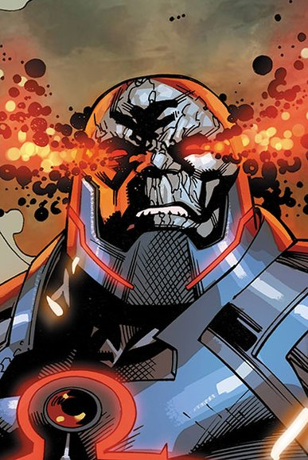

MY REVIEWS :D



FASTEST MAN Alive
Three men have held the title of "The Fastest Man Alive"—Jay Garrick, Barry Allen and Wally West. Each of them redefined the word "hero." The mysterious power known as the Speed Force is an energy field that has, over the centuries, granted incredible powers of velocity to certain heroes. The most famous of these is the Flash, also known as the Fastest Man Alive. Ever since the days of World War II, there has been a man clad in red who can run at impossible speeds, using his power to save lives and defend those who cannot defend themselves. All between the ticks of a second. In the 1940s, college student Jay Garrick acquired his super-speed abilities in a random lab accident and became the first DC Super Hero to go by the name the Flash. Years later, Jay was succeeded by police scientist Barry Allen, until Barry’s former kid partner Wally West took up the mantle at a time when Barry was considered dead. But, when Barry returned, he became the Flash once again. All three generations of speedsters have been cornerstone members of both the Justice Society and Justice League. The Flash has mastery over not just speed, but time itself, and he has often used his powers to travel though different eras and even into other dimensions. Although the Flash has not always been fast enough to outrun personal tragedy when it has come for him, he always does his best to prevent the same from happening to the people of Central City and Keystone City. In so doing, he's earned himself a spot among the greatest Super Heroes the DC Universe has ever known.